Un viaje desde la electrólisis hasta el núcleo atómico, explorando cómo la radiación ha transformado nuestra comprensión del universo.
Temas que exploraremos:
Electrólisis y rayos catódicos
Fluorescencia y fosforescencia
Espectrometría y cuerpo negro
Radiactividad y tipos de radiación
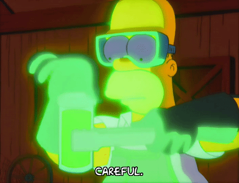
¿Sabías que...?
La radiación no solo está en los cómics y las series de TV. Está en las estrellas, en tu teléfono, en los hospitales y en la naturaleza misma. ¡Descubramos juntos la ciencia detrás del fenómeno!
Descubriendo la Radiación
Un recorrido histórico desde la electrólisis hasta el núcleo atómico
El espectro electromagnético: desde ondas de radio hasta rayos gamma
Objetivo de esta presentación
Comprender cómo la interacción entre la electricidad, la luz y la materia reveló la estructura interna del átomo y su núcleo. A lo largo del siglo XIX, una serie de experimentos aparentemente independientes condujeron a una revolución conceptual: la materia no era continua ni indivisible, sino que poseía una estructura interna capaz de emitir energía en formas diversas.
¿Qué es la radiación?
La radiación es la emisión y propagación de energía a través del espacio, ya sea en forma de ondas electromagnéticas (luz, rayos X, rayos gamma) o de partículas subatómicas (electrones, núcleos de helio). Su estudio permitió descubrir los componentes fundamentales de la materia.
Hitos históricos del descubrimiento
1800
Electrólisis
Faraday y Volta demuestran que la electricidad descompone la materia en sus elementos fundamentales
1800
Herschel Infrarrojo
1801
Ritter Ultravioleta
1864
Maxwell Luz electromagnética
1887
Hertz Ondas electromagnéticas
1895
Röntgen Rayos X
1896
Becquerel Radiactividad
1897
El Electrón
Thomson identifica los rayos catódicos como corpúsculos con carga negativa: los electrones
Filo conductor de la presentación
Cada descubrimiento abrió la puerta al siguiente: la electrólisis sugirió que la materia tenía componentes eléctricos; los tubos de rayos catódicos revelaron el electrón; y el estudio de estos fenómenos condujo al hallazgo de la radiactividad nuclear. Veremos cómo estas piezas encajan para formar nuestra comprensión moderna del átomo.
1. Electrólisis: La Electricidad Descompone la Materia
Definición y Principio
La electrólisis es un proceso en el cual hay una circulación de corriente eléctrica a través de una solución líquida, lo que permite descomponerla en sus componentes fundamentales.
El Experimento del Agua (H₂O)
Electrodo negativo (Cátodo): Se acumula el doble de volumen de gas (Hidrógeno, H₂).
Electrodo positivo (Ánodo): Se acumula la mitad de volumen de gas (Oxígeno, O₂).
Proporción: 2:1, evidenciando directamente la fórmula H₂O.
Reacción de descomposición:
2H₂O(l) → 2H₂(g) + O₂(g)
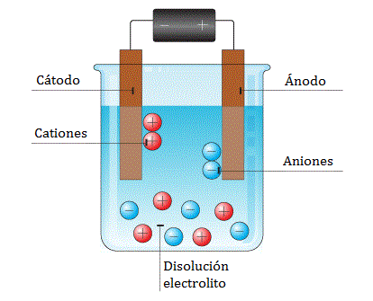
Electrólisis del agua: separación de hidrógeno y oxígeno mediante electrodos conectados a una fuente de corriente.
Descubrimiento fundamental
Gracias a la pila de Volta y a la electrólisis, se logró un mejor conocimiento de los elementos químicos. Se demostró que la electricidad no solo permite descomponer la materia, sino que también permite componerla.
Definición de los Electrodos
ÁNODO (+)
Electrodo conectado al polo positivo de la fuente de corriente, en el cual se produce la oxidación.
CÁTODO (-)
Electrodo conectado al polo negativo de la fuente de corriente, en el cual se produce la reducción.
2. Tubo de Rayos Catódicos: El Descubrimiento del Electrón
Contexto y Mecanismo
Con el objetivo de caracterizar materiales debido a sus notables propiedades eléctricas, se desarrolló el tubo de rayos catódicos (tubo de Crookes). Este dispositivo contiene gas a baja presión en su interior.
Al aplicar una alta diferencia de potencial, se genera una corriente eléctrica entre el cátodo y el ánodo. Tomando como referencia la ley de Ohm, medir esta corriente permite conocer la resistencia de cada sustancia. Al chocar con las paredes del tubo, esta corriente produce un fenómeno de fluorescencia.
Determinación del Origen de los Rayos
Para resolver la incógnita de si los rayos provenían del cátodo o del ánodo, se dispuso una pantalla con forma de cruz de Malta dentro del tubo. La proyección nítida de su sombra en las paredes fluorescentes permitió establecer que los rayos emergen del cátodo (polo negativo) y viajan en línea recta.
El hallazgo de J.J. Thomson (1897)
Thomson logró establecer que los rayos catódicos no son simples ondas, sino una manifestación de la electricidad en la materia en forma de corpúsculos con carga negativa, a los que denominó electrones.
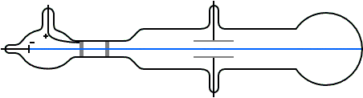
Esquema del experimento de J.J. Thomson utilizando campos eléctricos y magnéticos para desviar los rayos.
Importancia histórica fundamental
Este experimento transformó para siempre nuestra comprensión de la materia. Se demostró que el átomo no es indivisible, sino que posee una estructura interna compuesta por partículas subatómicas, dando inicio a la física moderna.
3. Rayos X y el Fenómeno de la Fluorescencia
Descubrimiento de los Rayos X (Roentgen, 1895)
Wilhelm Roentgen los descubrió accidentalmente al estudiar descargas en tubos de rayos catódicos sometidos a altas diferencias de potencial.
Son ondas electromagnéticas muy energéticas, con longitudes de onda del orden de 1 Å (10⁻¹⁰ m).
Aplicación médica: Permiten la generación de radiografías al atravesar tejidos blandos y ser absorbidos por huesos.
Aplicación científica: Se utilizan para estudiar la estructura íntima de la materia a través de la difracción en redes cristalinas.
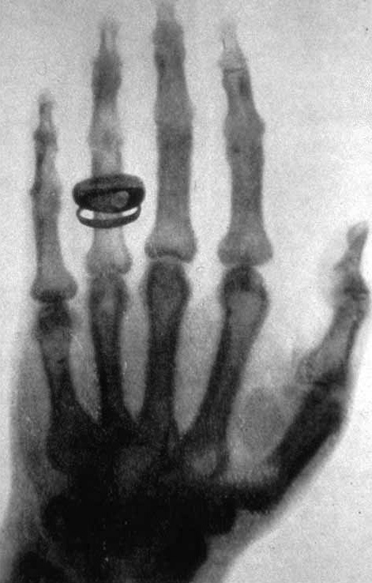
Los Rayos X permiten visualizar estructuras internas, revolucionando la medicina y el estudio de la materia.
Mecanismo de la Fluorescencia
Cuando ciertos materiales son excitados por luz ultravioleta, sus átomos absorben la energía y un electrón salta a un nivel más alto de energía. Al desexcitarse, el átomo posiblemente pase por una serie de estados intermedios de energía.
Esto hace que, al volver a su estado fundamental, el electrón realice saltos más pequeños, emitiendo fotones con menos energía (y por tanto, de menor frecuencia) que el fotón ultravioleta original, lo que percibimos como luz visible.
Analogía de la escalera
Este proceso es como subir de un brinco una pequeña escalera (fotón UV) y bajar después con uno o dos escalones a la vez. Como la energía liberada en cada escalón es menor, se emiten fotones de menor frecuencia, haciendo que el material brille con un color característico.
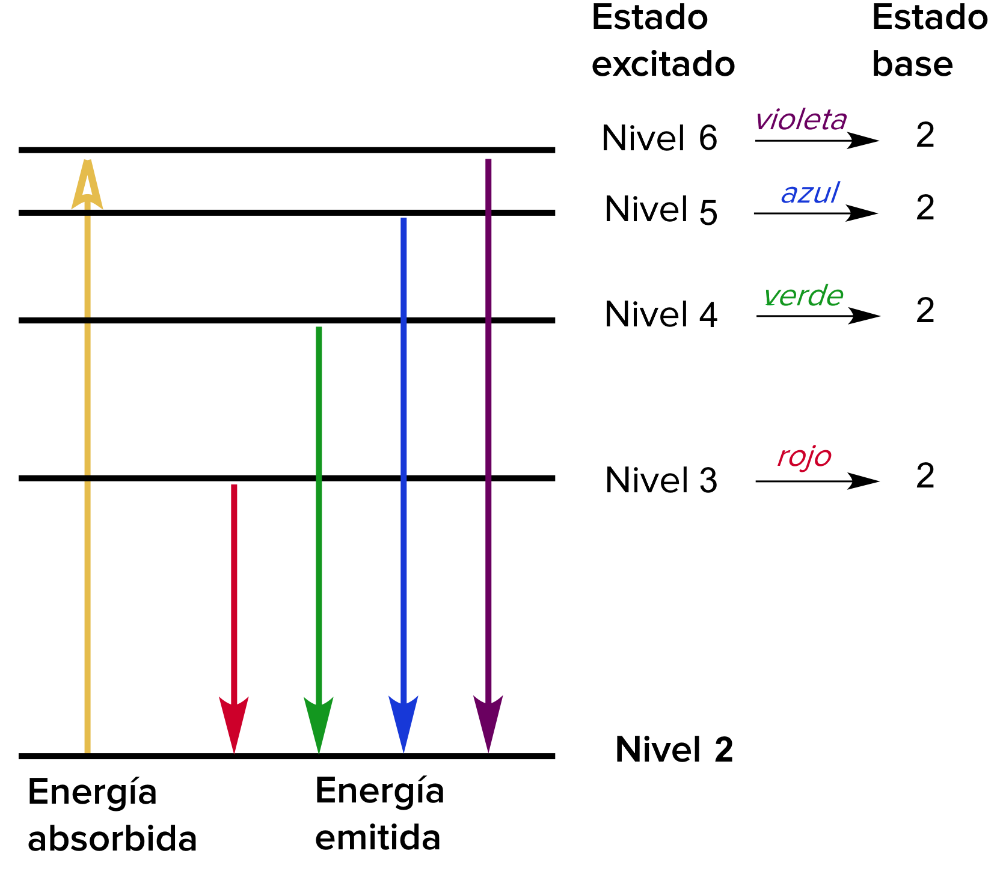
Diagrama de niveles de energía: un fotón de alta energía (UV) excita el átomo, que luego decae en escalones menores, emitiendo luz visible.
Aplicación práctica: La lámpara fluorescente
Consiste en un tubo cilíndrico de vidrio con electrodos en cada extremo y vapor de mercurio en su interior. Al aplicar voltaje de corriente alterna, los electrones se desprenden del filamento y vibran a grandes velocidades, excitando los átomos de mercurio, los cuales emiten fotones ultravioleta. El recubrimiento interno de fósforo absorbe esta radiación UV y, por fluorescencia, la transforma en la luz blanca visible que ilumina nuestros hogares.
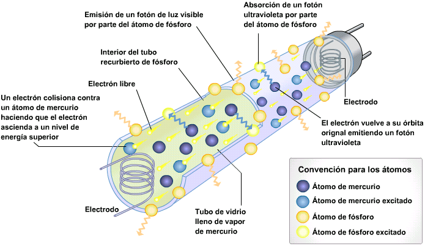
Diagrama de funcionamiento: Electrones emitidos por el filamento excitan el mercurio, generando fotones UV que el fósforo convierte en luz visible.
4. Fosforescencia: Emisión Lumínica Prolongada
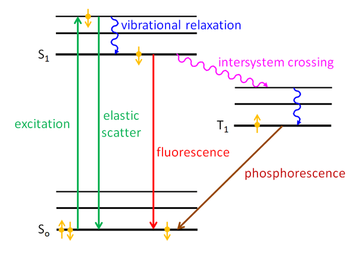
Diferencia temporal: la fluorescencia es inmediata, mientras que la fosforescencia persiste en el tiempo.
Diferencia fundamental con la fluorescencia
A diferencia de lo que sucede en los materiales fluorescentes, en la fosforescencia los electrones son impulsados a órbitas más externas donde se quedan "atorados". Los materiales que poseen esta peculiar propiedad se denominan fosforescentes.
Mecanismo de excitación prolongada
En estos materiales, los átomos son excitados por la luz ultravioleta. Sin embargo, en lugar de desexcitarse de inmediato (como ocurre en la fluorescencia), muchos de los átomos quedan atrapados en un estado prolongado de excitación, que a veces puede durar horas antes de que los electrones retornen gradualmente a su estado fundamental.
Ejemplos cotidianos
Carátulas de reloj luminosas.
Señales de emergencia y salidas.
Juguetes y objetos decorativos que brillan en la oscuridad.
El elemento fósforo
Un buen ejemplo clásico es el del elemento fósforo, ampliamente empleado en las carátulas de reloj y otros objetos. Al ser excitado previamente por luz ultravioleta (o luz solar), emite una luz verde característica de manera prolongada en la oscuridad, liberando lentamente la energía que había almacenado.
5. Espectrometría: La Huella Digital de los Elementos
¿Qué es la espectrometría?
Es el estudio de la radiación luminosa que emiten o absorben los cuerpos, específicamente de los elementos químicos que los componen cuando se encuentran en fase de vapor.
Mecanismo de Absorción y Emisión
Absorción: Un átomo absorbe un fotón de energía específica, haciendo que un electrón salte desde un nivel de energía inferior ($E_i$) a uno superior ($E_f$).
Emisión: Al regresar a su estado fundamental, el electrón realiza una transición descendente, emitiendo un fotón con una energía exactamente igual a la diferencia entre ambos niveles.
Energía del fotón emitido o absorbido:
\[ E_{fotón} = h \cdot f = E_f - E_i \]
Donde h es la constante de Planck, f la frecuencia, y (E_f - E_i) la diferencia de energía entre los niveles atómicos.
Analogía de las huellas dactilares
Cada elemento tiene una distribución característica de niveles electrónicos de energía. Por lo tanto, emite o absorbe luz con su propia distribución de frecuencias (su espectro). Estas líneas espectrales son tan características de cada elemento como las huellas digitales lo son de las personas, permitiendo identificar la composición de estrellas lejanas o muestras desconocidas.
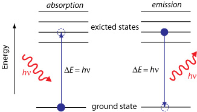
Transiciones electrónicas: absorción de energía (salto hacia arriba) y emisión de un fotón (salto hacia abajo).
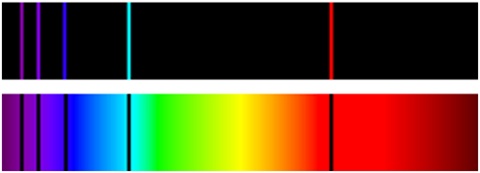
Espectros de línea característicos: las líneas brillantes (emisión) y oscuras (absorción) coinciden en la misma posición para cada elemento (ej. H, He, Na, Hg).
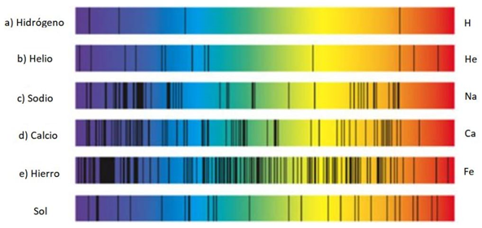
6. El Espectro Electromagnético
El espectro electromagnético: un continuo de radiación ordenado por longitud de onda y frecuencia.
Radio
λ: ~ 10³ m
f: ~ 10⁴ Hz
Escala: Edificios
Temp. fuente: ~ 1 K (-272°C)
Microondas
λ: ~ 10⁻² m
f: ~ 10⁸ Hz
Escala: Humanos
Temp. fuente: ~ 100 K (-173°C)
Infrarrojo
λ: ~ 10⁻⁵ m
f: ~ 10¹² Hz
Escala: Mariposas
Visible
λ: ~ 0.5×10⁻⁶ m
f: ~ 10¹⁵ Hz
Escala: Punta de aguja
Ultravioleta
λ: ~ 10⁻⁸ m
f: ~ 10¹⁶ Hz
Escala: Protozoos
Rayos X
λ: ~ 10⁻¹⁰ m
f: ~ 10¹⁸ Hz
Escala: Moléculas / Átomos
Rayos Gamma
λ: ~ 10⁻¹² m
f: ~ 10²⁰ Hz
Escala: Núcleo atómico
Temp. fuente: ~ 10,000,000 K
Relación fundamental
A menor longitud de onda (λ) → mayor frecuencia (f) → mayor energía (E).
\[ E = h \cdot f = \frac{h \cdot c}{\lambda} \]
Donde h es la constante de Planck y c la velocidad de la luz en el vacío.
Penetración en la atmósfera terrestre
La atmósfera actúa como un escudo protector natural. Según las propiedades del espectro:
Penetran fácilmente (Sí): Ondas de Radio y Luz Visible (razón por la cual podemos observar las estrellas y utilizar telecomunicaciones desde la superficie).
Son absorbidos (No): Microondas, Infrarrojo, Ultravioleta, Rayos X y Rayos Gamma (la atmósfera bloquea la mayor parte de esta radiación de alta energía, protegiendo la vida en la Tierra).
7. Radiación de Cuerpo Negro y el Origen de lo Cuántico
Definición de Cuerpo Negro
Es un objeto ideal que absorbe toda la radiación electromagnética que incide sobre él. Al calentarse, la radiación que emite depende únicamente de su temperatura, no de su composición.
Las dos leyes fundamentales
Ley de Desplazamiento de Wien: Determina el color (longitud de onda del pico de emisión). A mayor temperatura, el pico se desplaza a longitudes de onda más cortas (mayor frecuencia).
Ley de Stefan-Boltzmann: Determina la intensidad total. La energía total emitida es proporcional a la cuarta potencia de la temperatura ($T^4$). Si duplicas la temperatura, la energía emitida se multiplica por 16.
Ley de Wien: \[ \lambda_{pico} \cdot T = 2.898 \times 10^{-3} \text{ m·K} \]
Ley de Stefan-Boltzmann: \[ P = \sigma \cdot A \cdot T^4 \]
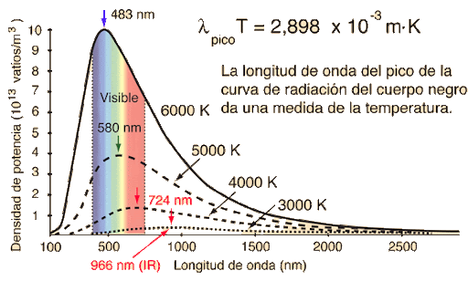
A mayor temperatura, el pico de emisión se desplaza a la izquierda (Wien) y el área bajo la curva crece enormemente (Stefan-Boltzmann).
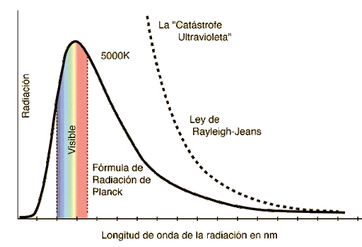
Aplicación astrofísica
La temperatura de las estrellas se determina midiendo el color de máxima intensidad. Una estrella azul-violeta tiene casi el doble de temperatura que una estrella roja, y emite muchísima más energía total.
La Catástrofe del Ultravioleta
A finales del siglo XIX, la física clásica (Ley de Rayleigh-Jeans) predecía que un cuerpo negro debería emitir energía infinita en longitudes de onda muy cortas (ultravioleta). Esto era físicamente imposible y se conoció como la "catástrofe".
La solución (Max Planck, 1900): Propuso que la energía no se emite de forma continua, sino en paquetes discretos llamados cuantos ($E = h \cdot f$). Esto ajustó perfectamente la curva experimental y dio nacimiento a la teoría cuántica.
Metales incandescentes (Ejemplo cotidiano)
A medida que un sólido se calienta, hay más transiciones de alta energía:
480°C: Débil resplandor rojo
730°C: Rojo granate
930°C: Anaranjado brillante
1300°C: Blanco amarillento
1400°C: Blanco
8. Radiactividad: La Inestabilidad del Núcleo Atómico
1896
Becquerel Emisión espontánea del uranio
1898
Rutherford Clasifica emisiones alfa y beta
1900
Villard Identifica radiación gamma
El Descubrimiento (Henri Becquerel, 1896)
Becquerel descubrió accidentalmente que las sales de uranio velaban placas fotográficas incluso sin exposición a la luz.
En un experimento crucial, colocó una cruz de Malta entre la sal de uranio y la placa fotográfica. La sombra nítida proyectada demostró que la radiación viajaba en línea recta y provenía espontáneamente del propio material, no de una fuente externa.
Definición y Mecanismo Físico
La radiactividad es la desintegración espontánea del núcleo atómico. Ocurre en elementos con número atómico Z > 82, los cuales son naturalmente inestables.
¿Por qué ocurre?
El núcleo contiene protones (carga positiva) y neutrones. Cuando la repulsión electrostática entre los protones supera a la fuerza nuclear fuerte que los mantiene unidos, el núcleo se vuelve inestable. Para alcanzar un estado de menor energía, se desintegra emitiendo radiación.
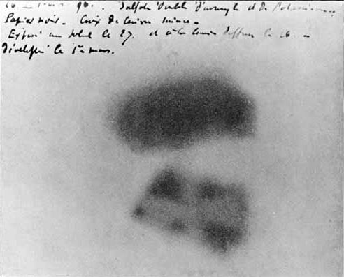
Placa fotográfica de Becquerel: la sombra de la cruz de Malta prueba que la radiación del uranio viaja en línea recta.
Elementos radiactivos comunes
Uranio (U)
Z = 92
Masa: ~238
Radio (Ra)
Z = 88
Masa: ~226
Plutonio (Pu)
Z = 94
Masa: ~244
Las tres clases de radiación emitidas
Estos elementos inestables emiten tres tipos distintos de radiación, diferenciados principalmente por su carga eléctrica (lo que determina cómo interactúan con la materia):
Rayos Alfa (α): Tienen carga eléctrica positiva.
Rayos Beta (β): Tienen carga eléctrica negativa.
Rayos Gamma (γ):No tienen carga eléctrica (son ondas electromagnéticas).
9. Tipos de Radiación Nuclear y su Penetración
Los elementos con número atómico mayor que 82 son inestables y emiten tres clases distintas de radiación para alcanzar un estado de menor energía. Se diferencian principalmente por su composición y su carga eléctrica.
Radiación α (Alfa)
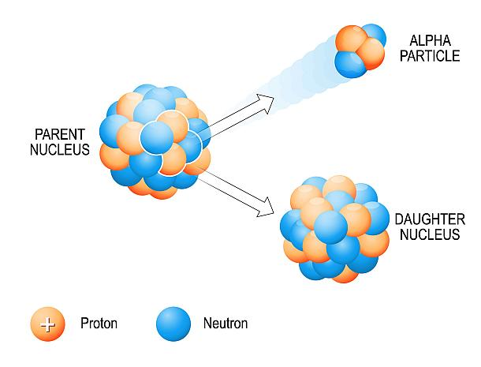
Composición: Flujo de núcleos de Helio (doblemente ionizados, ²He⁴⁺⁺).
Carga eléctrica: Positiva (+2).
Masa: Alta (la más pesada de las tres).
Penetración: Muy baja.
Blindaje: Se detiene con una simple hoja de papel o la piel humana.
Radiación β (Beta)
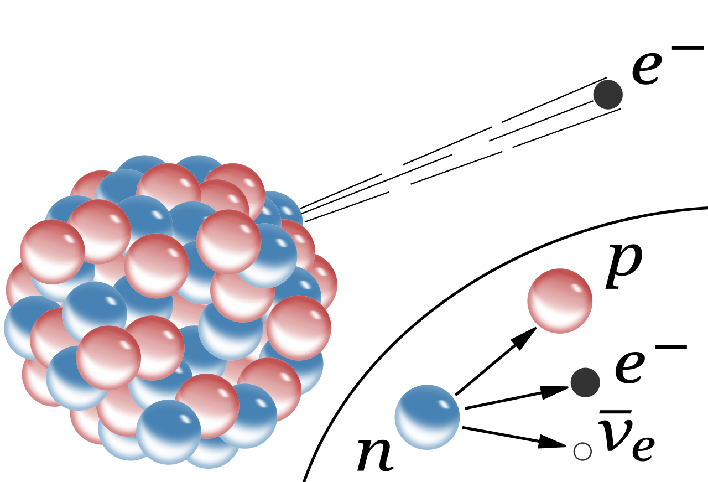
Composición: Flujo de electrones de alta energía.
Carga eléctrica: Negativa (-1).
Masa: Muy baja (mucho menor que la partícula alfa).
Penetración: Media.
Blindaje: Se detiene con una lámina de aluminio de pocos milímetros.
Radiación γ (Gamma)
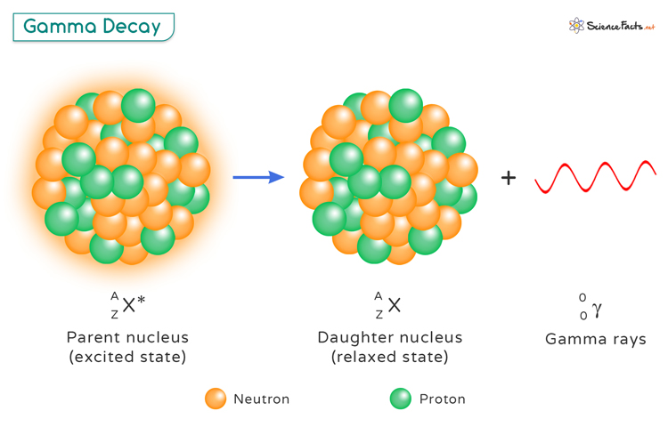
Composición: Radiación electromagnética (corriente de fotones de alta energía).
Carga eléctrica: No tienen carga (neutra).
Masa: Sin masa en reposo.
Penetración: Muy alta.
Blindaje: Requiere una gruesa placa de plomo o un bloque de hormigón.
Poder de Penetración Comparativo
La capacidad de atravesar la materia depende directamente de la masa y la carga de la radiación. A mayor masa y carga, mayor interacción con la materia y, por tanto, menor poder de penetración.
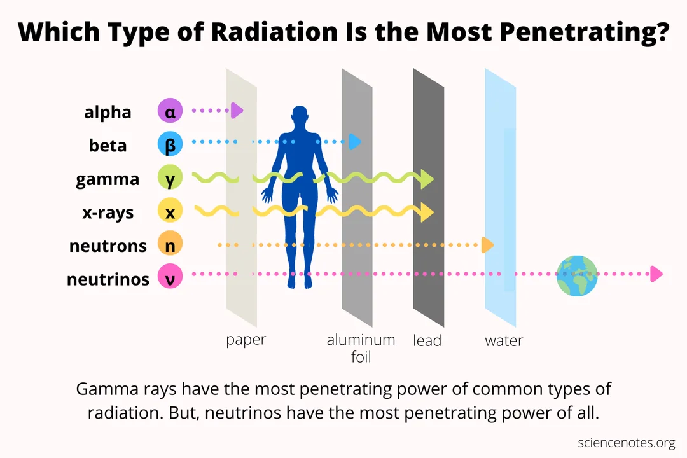
Esquema clásico: La radiación Alfa es detenida por el papel, la Beta atraviesa el papel pero es detenida por el aluminio, y la Gamma atraviesa ambos, requiriendo plomo u hormigón para ser atenuada.
Consideraciones de seguridad
Aunque la radiación alfa es la menos penetrante, resulta particularmente peligrosa si se inhala o ingiere, ya que transfiere toda su energía en un área muy pequeña del tejido. La radiación gamma, en cambio, es peligrosa externamente debido a su alta capacidad de penetración en el cuerpo humano.
Síntesis: El Desarrollo Histórico de la Radiación
1
Electrólisis La electricidad descompone la materia
2
Rayos Catódicos Descubrimiento del electrón
3
Rayos X Roentgen y la radiación penetrante
4
Radiactividad Becquerel y el núcleo inestable
Conceptos fundamentales
Radiación Atómica
Fluorescencia: Emisión inmediata.
Fosforescencia: Emisión prolongada.
Espectrometría: Huella digital (E = hf).
Cuerpo negro: Relación T-color.
Radiación Nuclear
Alfa (α): Núcleos de He, baja penetración.
Beta (β): Electrones rápidos (y neutrinos).
Gamma (γ): Fotones de alta energía.
Z > 82: Naturalmente radiactivos.
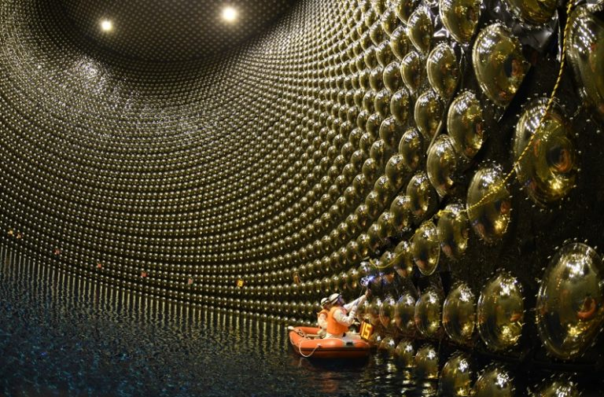
Interior del observatorio de neutrinos Super-Kamiokande, ubicado a 1.000 metros bajo tierra en la prefectura de Gifu, Japón. El tanque cilíndrico de acero inoxidable (39 metros de diámetro y 41 metros de altura) alberga 50.000 toneladas de agua ultrapura y está revestido por más de 11.000 tubos fotomultiplicadores diseñados para captar la tenue radiación de Cherenkov que emiten las partículas al interactuar con el agua.
💡 Pregunta para pensar
Sabías que tu propio cuerpo es ligeramente radiactivo (debido al Potasio-40) y que, en este preciso instante, billones de neutrinos (partículas fantasma emitidas en desintegraciones beta) atraviesan tu mano cada segundo sin que lo sientas?
Esto nos lleva a una conclusión: la radiación no es algo "externo" o "peligroso" por defecto. Es el lenguaje fundamental que utiliza el universo, desde el núcleo de un átomo hasta el centro de una estrella, para buscar su estado de mayor estabilidad.